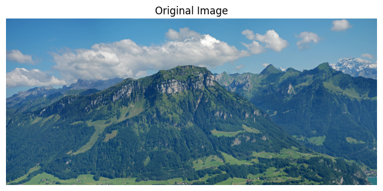
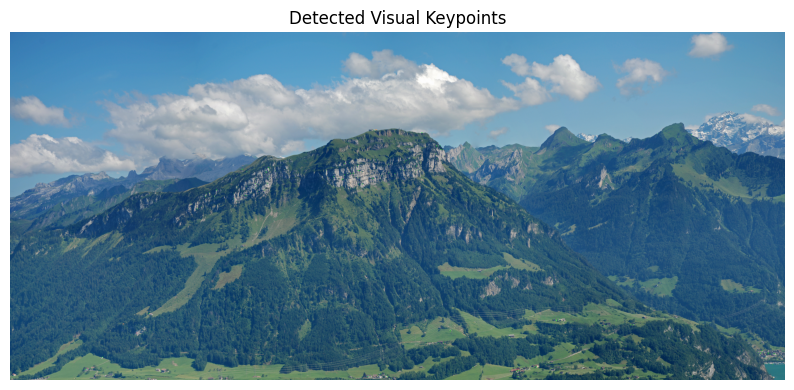
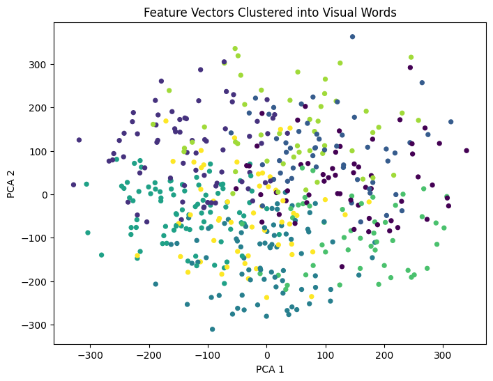

!pip -q install opencv-python matplotlib scikit-learnOpen in Colab Download notebook (.ipynb)
Runs as is with an example image from Wikimedia Commons.
COMS 930 – Computational Methods
This notebook demonstrates how computers extract visual features from images. We will:
- Load an image
- Detect keypoints
- Inspect feature vectors (descriptors)
- Cluster descriptors into visual words
- Visualize the clusters
import cv2
import matplotlib.pyplot as plt
import numpy as np
from urllib.request import urlopen, Request
from sklearn.cluster import KMeans
from sklearn.decomposition import PCALoad an Example Image
url = 'https://upload.wikimedia.org/wikipedia/commons/3/3f/Fronalpstock_big.jpg'
req = Request(url, headers={'User-Agent': 'Mozilla/5.0'})
img_array = np.asarray(bytearray(urlopen(req).read()), dtype=np.uint8)
img = cv2.imdecode(img_array, cv2.IMREAD_COLOR)
img = cv2.cvtColor(img, cv2.COLOR_BGR2RGB)
plt.figure(figsize=(8,6))
plt.imshow(img)
plt.axis('off')
plt.title('Original Image')
plt.show()
Detect Visual Keypoints (Feature Extraction)
Keypoints are visually informative locations such as corners, edges, and texture changes.
gray = cv2.cvtColor(img, cv2.COLOR_RGB2GRAY)
orb = cv2.ORB_create(nfeatures=500)
keypoints, descriptors = orb.detectAndCompute(gray, None)
img_keypoints = cv2.drawKeypoints(img, keypoints, None, color=(0,255,0), flags=0)
plt.figure(figsize=(10,7))
plt.imshow(img_keypoints)
plt.axis('off')
plt.title('Detected Visual Keypoints')
plt.show()
Inspect the Feature Vectors
For each keypoint, ORB computes a descriptor. This is a numerical summary of the local visual pattern around that keypoint.
- Rows = keypoints
- Columns = descriptor values
In other words, each row is a feature vector.
print('Number of keypoints:', len(keypoints))
print('Descriptor matrix shape:', descriptors.shape)
print('\nFirst feature vector:')
print(descriptors[0])Number of keypoints: 500
Descriptor matrix shape: (500, 32)
First feature vector:
[212 49 187 96 248 108 113 80 186 141 231 24 22 151 65 58 176 60
76 56 50 211 176 2 219 161 32 108 128 33 38 99]What Does This Mean?
If the output shape is, for example, (500, 32), that means:
- the algorithm found 500 keypoints
- each keypoint is represented by a 32-number feature vector
These numbers summarize local edge and texture structure near the keypoint.
Cluster the Feature Vectors into “Visual Words”
A Bag-of-Visual-Words approach groups similar feature vectors together.
Each cluster can be treated as a visual word.
k = 8 # number of visual words for a simple demo
kmeans = KMeans(n_clusters=k, random_state=42, n_init=10)
cluster_labels = kmeans.fit_predict(descriptors)
print('Cluster counts (visual word frequencies):')
for i in range(k):
print(f'Visual word {i}: {(cluster_labels == i).sum()} keypoints')Cluster counts (visual word frequencies):
Visual word 0: 58 keypoints
Visual word 1: 71 keypoints
Visual word 2: 52 keypoints
Visual word 3: 78 keypoints
Visual word 4: 88 keypoints
Visual word 5: 50 keypoints
Visual word 6: 49 keypoints
Visual word 7: 54 keypointsVisualize the Clusters in 2D
Each point below is one feature vector (one keypoint descriptor). PCA compresses the 32-dimensional descriptors into 2 dimensions so we can plot them.
Different colors = different clusters = different visual words.
pca = PCA(n_components=2)
desc_2d = pca.fit_transform(descriptors)
plt.figure(figsize=(8,6))
plt.scatter(desc_2d[:,0], desc_2d[:,1], c=cluster_labels, s=18)
plt.title('Feature Vectors Clustered into Visual Words')
plt.xlabel('PCA 1')
plt.ylabel('PCA 2')
plt.show()
Connect This Back to the Theory
The pipeline is:
image → keypoints → feature vectors → clusters → visual words
In a full Bag-of-Visual-Words analysis, we would repeat this across many images and then count how often each visual word appears in each image.